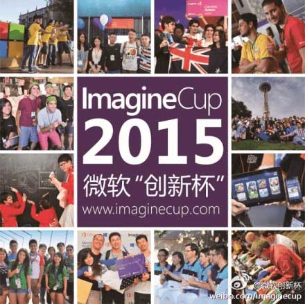

Imagine Cup 微软“创新杯”全球学生大赛是目前全球规模最大、影响最广的学生科技大赛。参赛学生可以在这个平台上释放他们的创意和技术才能，在最新的技术平台上创建一流的科技解决方案，将创意变为商业现实，培养学生的创新精神和社会责任感。

上一届校园预选赛的时间安排
2015年12月5日前 自由组队报名
2015年12月25日前 提交项目计划书
2016年3月 评委预选审核
2016年4月 现场答辩打擂
一等奖 1名(直接晋级中国区半决赛)
ACM国际大学生程序设计竞赛是由美国计算机协会（ACM）主办的，一项旨在展示大学生创新能力、团队精神和在压力下编写程序、分析和解决问题能力的年度竞赛。经过近30多年的发展，ACM国际大学生程序设计竞赛已经发展成为最具影响力的大学生计算机竞赛。
美国大学生数学建模竞赛（MCM/ICM），是唯一的国际性数学建模竞赛，也是世界范围内最具影响力的数学建模竞赛。软院每年几乎所有的国际级奖项都是在这个竞赛中获得的。
“花旗杯”金融创新应用大赛(原“花旗杯”金融与信息技术应用大赛，以下简称“花旗杯”大赛)作为项目的重要组成部分，旨在引导学生在校园阶段即开始重视所学知识与金融产业发展、社会进步相结合。激发学生对科学技术和金融产业的热爱，鼓励通过团队协作，综合运用所学知识，迸发金融创新的奇思妙想，提出具有商业化前景的解决方案。
由教育部科技发展中心主管、互联网应用创新开放平台联盟主办的全国高校互联网应用创新大赛自2013年11月开始，陆续启动了“全国高校物联网应用创新大赛”、“全国高校软件定义网络(SDN)应用创新开发大赛”、 “全国高校移动互联网应用开发创新大赛”和“全国高校云计算应用创新大赛”等4个赛项
“英特尔杯”全国大学生软件创新大赛
“蓝桥杯”全国软件和信息技术专业人才大赛
“认证杯”数学中国数学建模网络挑战赛
腾讯T派移动互联网创新创业大赛
赛码“Bestcoder”杯中国大学生程序设计冠军赛
安吉杯”中国机器人大赛旅游类项目选拔赛（I型机器人探险游）
ACM-ICPC中国·东北地区第九届大学生程序设计竞赛暨中国大学生程序设计邀请赛
“甲骨文杯”全国Java程序设计大赛
“博创杯”全国大学生嵌入式设计大赛分赛比赛
“21世纪路劲杯”互联网金融创新案例大赛
MathorCup 全球大学生数学建模挑战赛暨CAA2015世界大学生数学建模竞赛
中国辩论公开赛
全国大学生英语竞赛（NECCS）
全国大学生广告创意大赛
Quants For You 飞创公司X-Quant产品校园程序员大赛